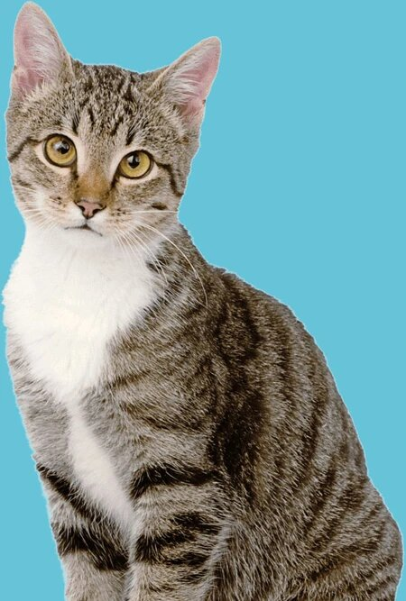
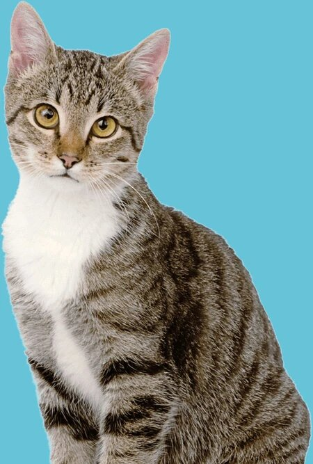

We designed PrettyLitter with proprietary health monitoring technology to help signal some potential health issues early before you may even notice symptoms in your cat.
PrettyLitter reacts to certain urinary elements such as levels of acidity and alkalinity to make color changes visible to the naked eye or show blood.
DARK GREEN OR BLUE
This means your cat’s urine is alkaline indicating possible:
Increased risk of struvite stone formation in the bladder
Certain species of bacteria of feline urinary tract infection (bacteria that causes the infection can increase urine pH)
YELLOW TO ORANGE
This means that your cat’s urine is acidic indicating possible:
Kidney disease or kidney tubular acidosis
Metabolic acidosis
UTI
Calcium oxalate crystal formation
RED
This shows the presence of blood indicating possible:
Bladder inflammation
Bladder stones
Urinary tract infection
Bladder cancer
Renal pathology (renal hematuria)
While our color changing technology was designed with your cat’s health in mind, we always want to emphasize that PrettyLitter is a tool that provides insights into what might be going on with your cat, and not a medical diagnostic product. Only a licensed Veterinarian can diagnose a medical condition.
 

Follow Us